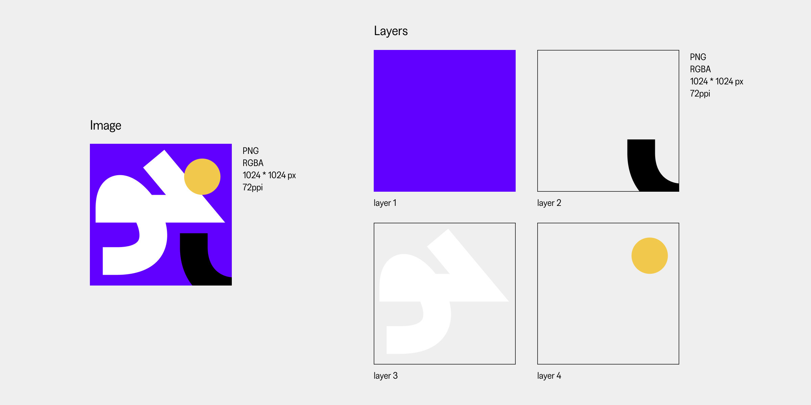
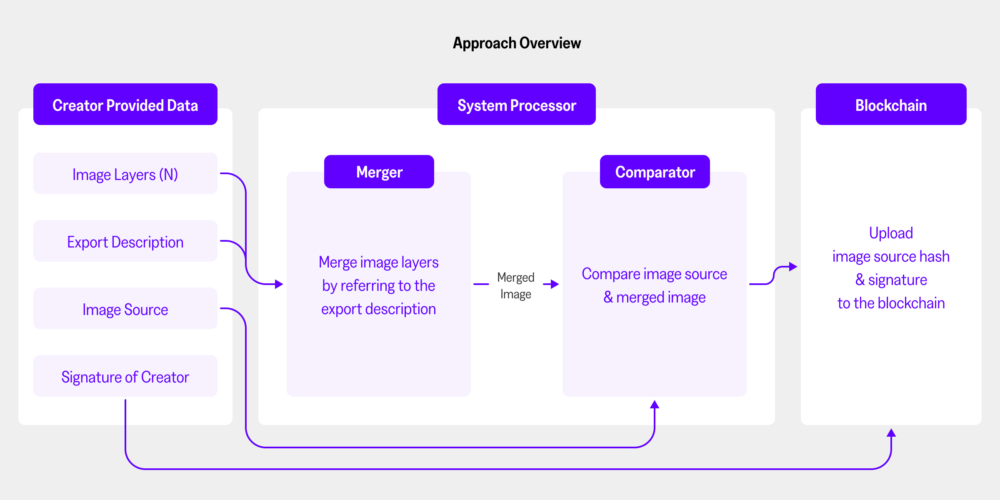
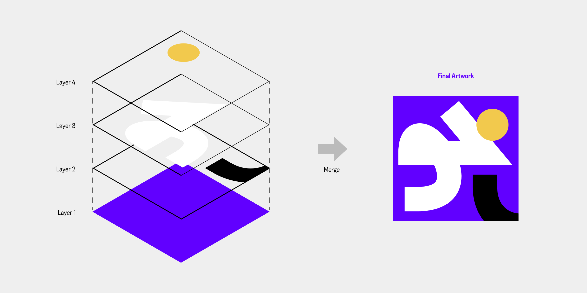

NFT Image Copyright Protection System using Image Layer based Creator Authentication
[ 인용 ] 김지나, 이찬우, 서중원, 박수용. 창작자 인증을 위한 이미지 레이어 기반의 NFT 이미지 저작권 보호 시스템. 한국정보과학회 학술발표논문집
[ 요약 ] NFT 미술품 거래 시장이 활성화됨에 따라 디지털 이미지 NFT의 저작권 문제가 대두되고 있다. 현재 NFT 거래가 유효한 저작물 거래로 판단 가능한지, 혹은 발행된 NFT가 도용된 작품은 아닌지 알 수 없으며 저작권 관련 분쟁이 발생할 경우에 대한 제도적인 보호장치가 존재하지 않기 때문이다. 그러나 저작 권은 창작자의 이익과 직결되는 기본 권리로 이를 보호하는 것은 매우 중요하다. 따라서 본 논문에서는 디지털 창작물 작업 과정에서 발생하는 레이어를 기반으로 NFT를 발행하는 주체가 창작자임을 인증하고, 이를 블록체인에 기록해 이미지 NFT의 저작권을 보호하는 방안을 제시한다.
LINK FOR A FULL PAPER(Dbpia)